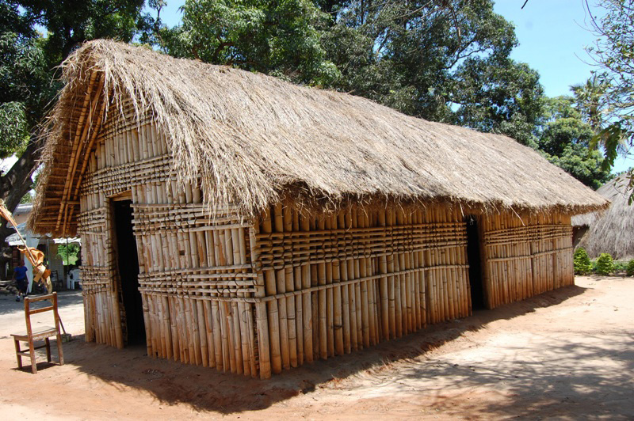
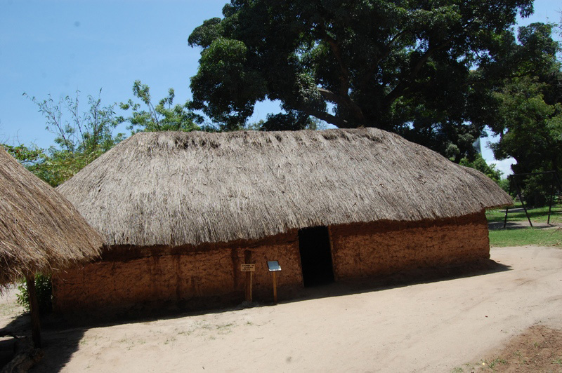

Nyumba ya banda
Nyumba ya banda ni aina ya nyumba yenye paa la pande mbili. Ujenzi wake hutumia fito, mianzi, matete, mirunda, udongo, kinyesi cha mifugo, nyasi, makuti au matawi ya mimea. Baadhi ya jamii za Kitanzania zinazotumia aina hii ya nyumba ni Wanyamwezi, Wasukuma, Wanyakyusa na Wamwera.


Maswali
Shughuli ya pili
- Chunguza picha au video zinazoonesha nyumba za banda katika jamii za Kitanzania.
- Chora picha ya nyumba ya banda.